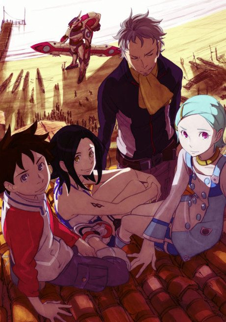

Eureka Seven
交響詩篇エウレカセブン
An original anime, so there's no book to continue with.
7.8AniList score
—Animeter, no votes yet
79episodes, 3 seasons
Rate it or report where you stopped
3 seasons, 79 episodes
In airing order. Episode numbers on this site count straight through every season, so season 2 starts at episode 51.
1
2005 · TV
Eureka Seven
Episodes1–5050 ep
2
2012 · TV
Eureka Seven AO
Episodes51–7424 ep
3
2017 · Web
Eureka Seven AO Final Episode
Episodes75–795 ep
Sources: AniList